DragonFlow-KronosGraph V1 流水线产物可视化
由 scripts/13_visualize_v1.py 生成。
底层模块在 src/dragonflow/viz/v1/，与 dragonflow/viz/ 的 features 图隔离。
01_nav_drawdown · 净值曲线 + 水下回撤
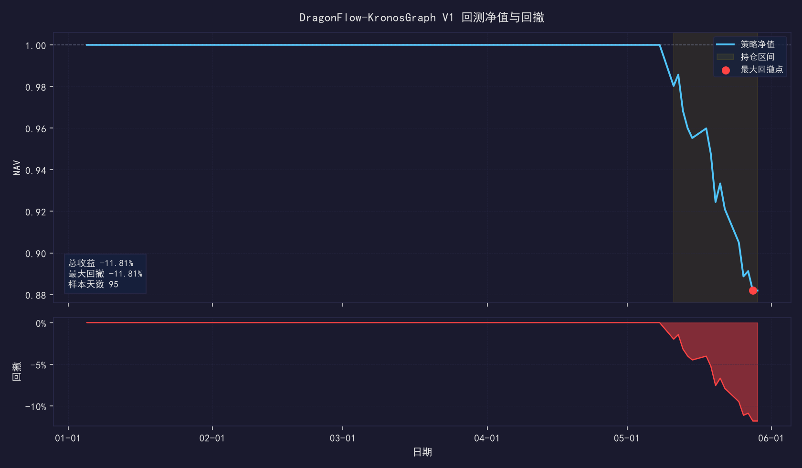
02_position_turnover · 持仓数量 & 单边换手率
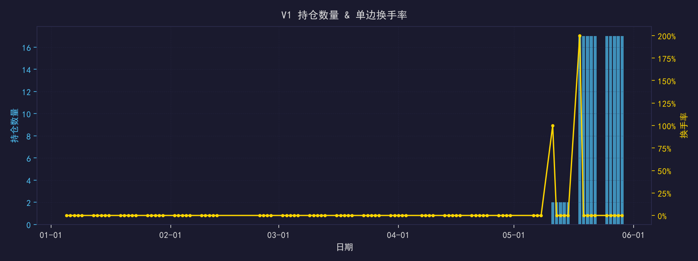
03_rank_ic · 日度 Rank IC 与累计
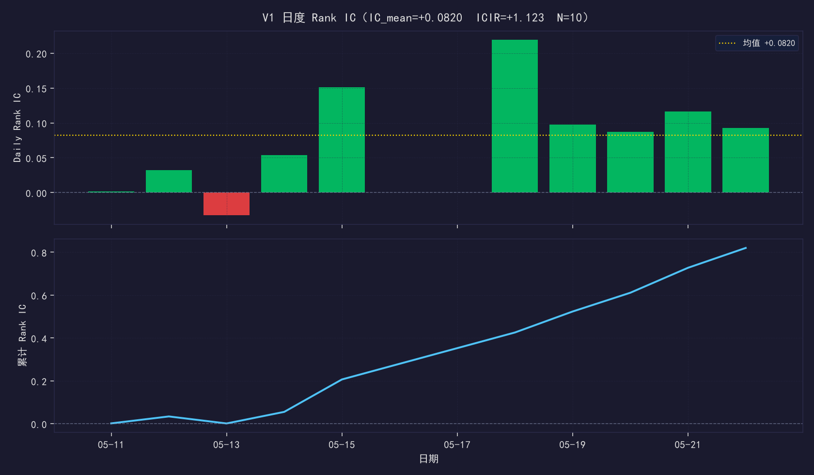
04_quintile_returns · 5 分位组合超额累积 + 多空价差
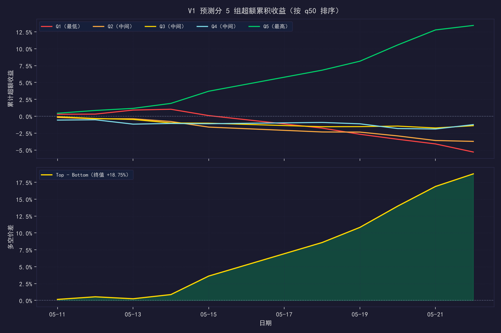
05_pred_vs_actual · q50 预测 vs 真实超额（hexbin）
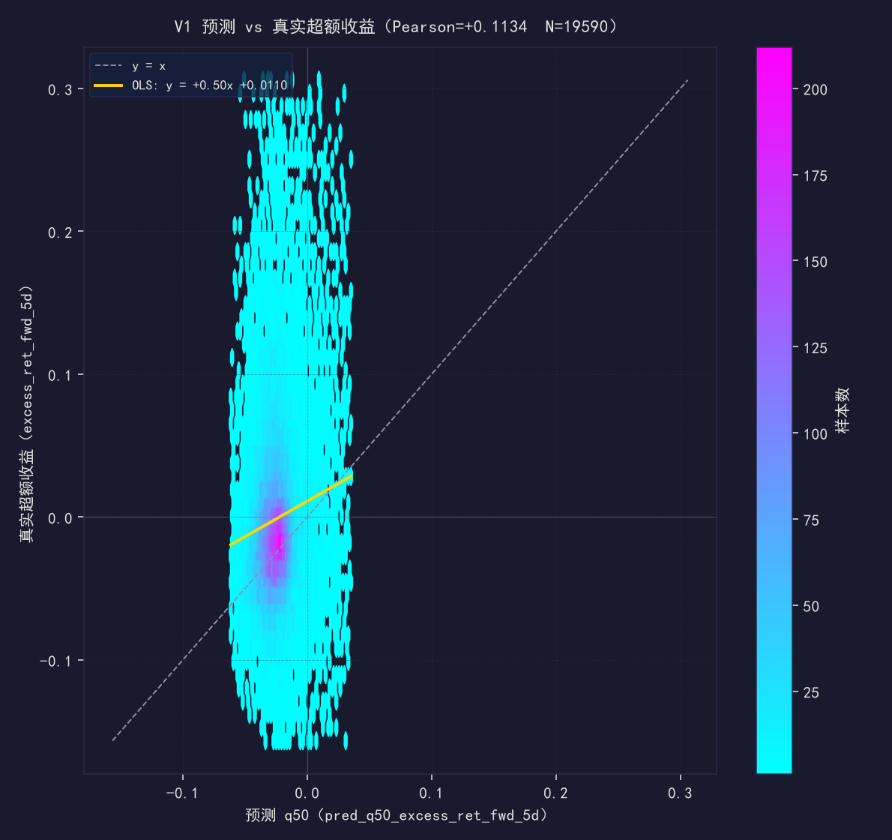
06_quantile_calibration · 分位数校准 + 80% 区间覆盖率
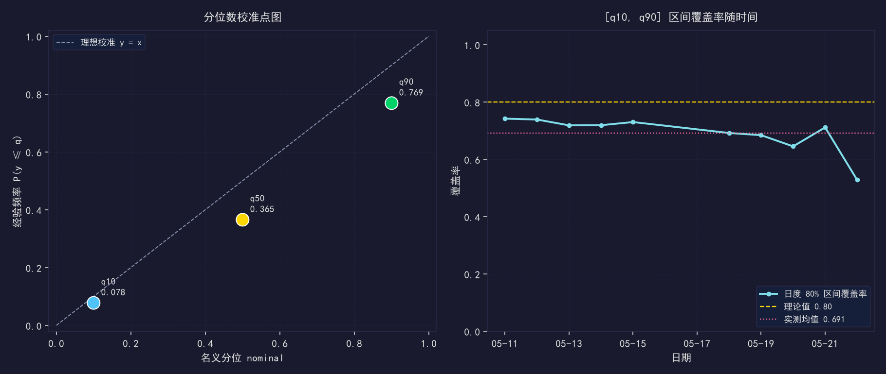
07_pred_dispersion · 预测横截面分布 + 模型不确定带
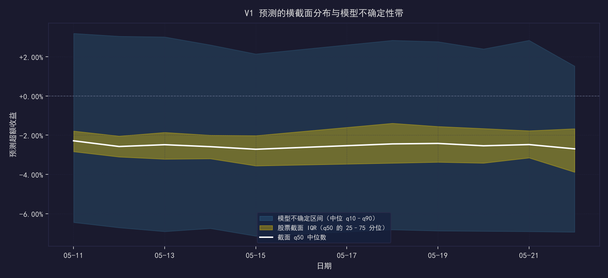
08_spectral_pca · 谱嵌入 PCA · cluster / industry 上色
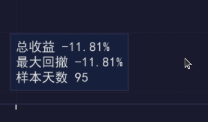
09_cluster_size_over_time · 簇规模随 refit 时间堆叠
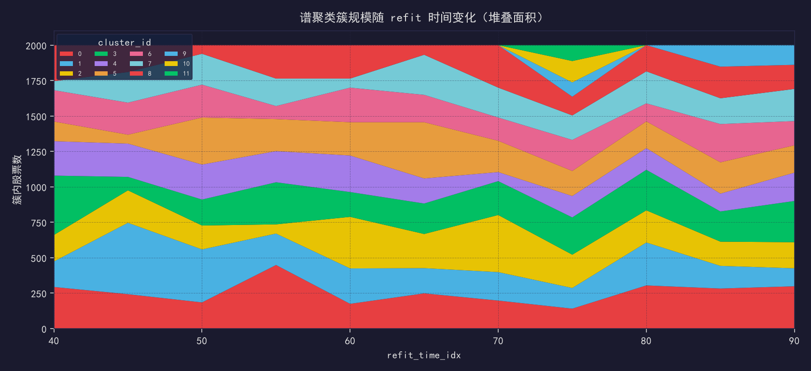
10_cluster_transition · 首尾 refit 簇成员变迁矩阵
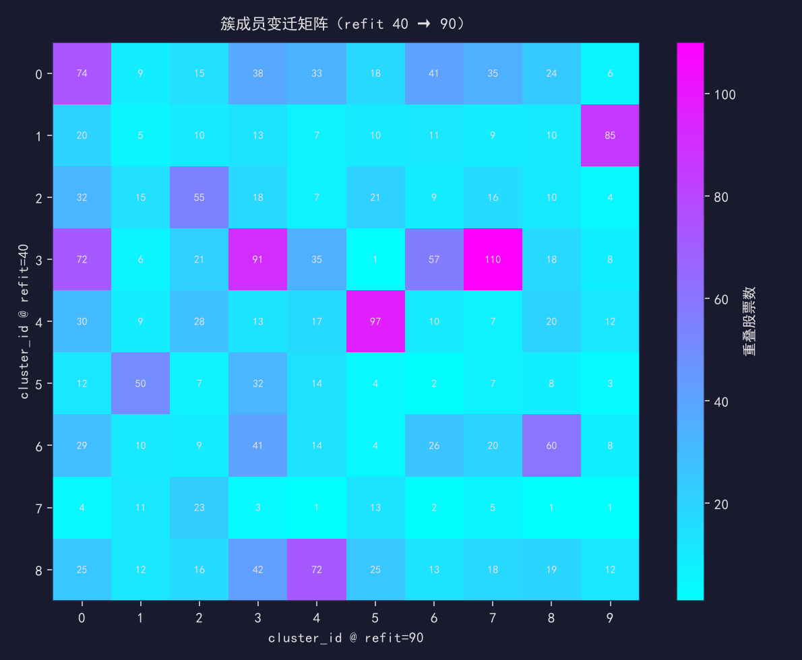
11_kline_emb_pca · K 线嵌入 PCA · 行业上色
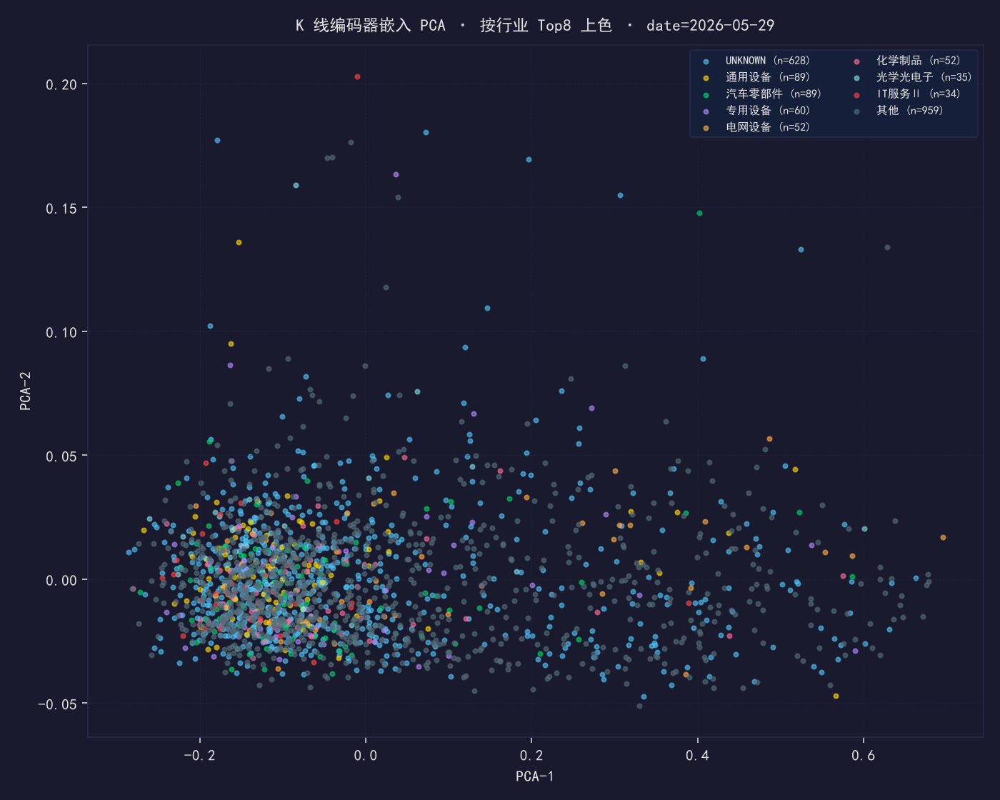
12_kline_aux_pred · K 线辅助预测诊断
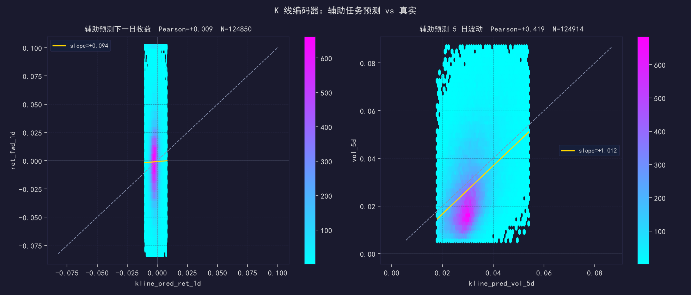